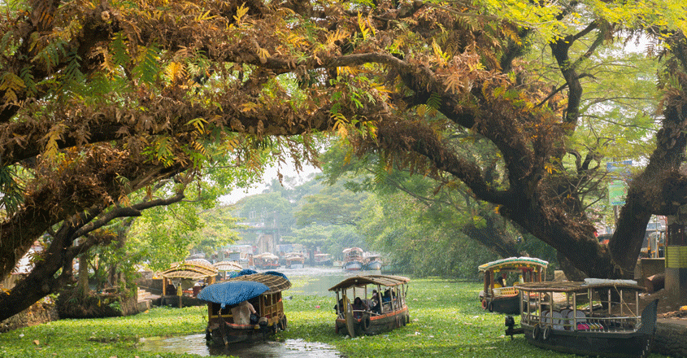

Kerala is a charming South Indian destination that should be in every traveller’s bucket
list. Adorned with the emerald backwaters, sprawling and lush tea estates, pristine hill stations, and azure
Arabian Sea, Kerala tourism boasts numerous tourist places with which you will fall in love instantly.
In North Kerala, districts like Kasaragod, Kannur, Wayanad, Kozhikode, and Malappuram have many attractions for
the tourists. Wayanad offers a lovely hill station holiday whereas Kozhikode offers a great beach holiday and an
opportunity of bird watching.
In Central Kerala, Palakkad, Thrissur, Ernakulam, and Idukki have a number of experiences in store. Thrissur is
a culture aficionado’s paradise while Idukki and Ernakulam are the hotspots for nature lovers.
In South Kerala Kottayam, Pathanamthitta, Alappuzha, Kollam, Thiruvananthapuram are ready with a variety of
experiences like backwaters and houseboat in Alappuzha; beach vacations in Kollam, and a glance at rich history
of Kerala at Pathanamthitta.
Kerala tourism isn’t only about imbibing natural beauty but its rich culture that is festooned with dances,
festivals, delectable cuisine, literature, Ayurveda therapies, and art & craft. Kerala has it all, and you have
to see it, to believe it.
The state opens its doors to beach holidays with picturesque beaches like Varkala, Kovalam and Marari. Giving a
good run to pristine beaches are the backwaters of Kerala that can be best experienced in Alleppey and
Kumarakom.
Kerala's beach and backwaters are accompanied by its lush and surreal hill stations, of which Munnar, Wayanad
and Vagamon are the best places to visit in the summer season. With Western Ghats covering some of its area,
Kerala is the best wildlife destination and is perfect for birdwatching.